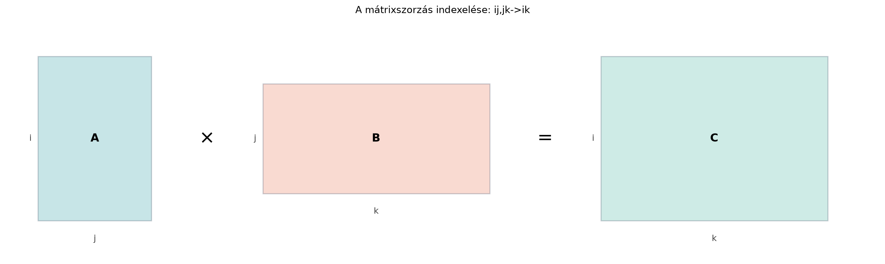

A mélytanulási kódban a mátrixszorzás @ operátora
gyakran elegendő, de amikor egyszerre batch-, fej- és token-dimenziókkal
dolgozunk, a shape-ek és a transzponálások könnyen áttekinthetetlenné
válnak. A figyelempontszám kiszámításánál például nem egyetlen
mátrixszorzás van, hanem ugyanaz a művelet több batch-elemre és több
figyelemfejre egyszerre. Ilyenkor szeretnénk a matematika indexeit
közvetlenül kódba írni, anélkül, hogy fejben kellene tartanunk a
transzponálásokat. Erre való az einsum.
Az előző alfejezetben (Tenzor az MI-ben: többdimenziós tömbök és tengelyek) tenzoroknak neveztük a többdimenziós tömböket, és minden tengelynek szerepet adtunk. A mátrixszorzáskor az szorzatban az oszlopai és a sorai ugyanahhoz a dimenzióhoz tartoznak, és ezeken fut az összegzés. Ha ezt a gondolatot indexekkel írjuk, pontosan az Einstein-összegzéshez jutunk.

Az ábrán az
sorait i-vel, oszlopait j-vel jelöljük, a
sorait j-vel, oszlopait k-val. A közös
j index jelzi, hogy ezen a tengelyen kell összegezni. A
kimenetben az i és k marad meg, ezért a
szorzat
alakja az
sorszámának és a
oszlopszámának felel meg.
Definíció (einsum-kifejezés). A NumPy
np.einsum függvénye egy karakterlánccal megadott
tenzorkontrakciót hajt végre. A specifikáció
'in_1,in_2->out' alakú, ahol az in_l mezők
a bemeneti tenzorok tengelyeit nevezik el (például i,
j, b), az out mező pedig a
kimenetben megmaradó tengelyeket sorolja fel. Ha egy tengelynév a
bemeneti oldalon szerepel, de a kimenetből hiányzik, akkor arra a
tengelyre összegzünk. A kimenet elemeit a kimeneti indexekhez tartozó
dimenziók alkotják, a megadott sorrendben. Minden index egyetlen betű (a
NumPy kis- és nagybetűt is elfogad); az 'ij' tehát két
index, nem egy.
A matematikai Einstein-szabály szerint ugyanahhoz az
indexhez minden operandusban ugyanaz a dimenzió tartozik, és az ismételt
indexen összegzünk. A NumPy gyakorlati implementációja ezt kiterjeszti:
ha ugyanazon címke két operandusban szerepel, és az egyik mérete
,
akkor a kisebbet a nagyobb méretre broadcastolja. Ez nem azonos a strict
indexszabállyal, ezért a kódban a shape-eket külön is ellenőrizni kell.
Az ellipszis (...) a vezető batch-tengelyeket jelöli, és
ezeken is megengedhető a broadcasting.
Például az 'ii->i' csak négyzetes mátrixra értelmes;
nem négyzetes mátrixnál a NumPy hibát ad. A 'ij,ij->ij'
viszont egy
és egy
mátrixot össze tud hasonlítani, mert az első tengelyen a méret
broadcastol. Ezeket a különbségeket a következő kód mutatja meg:
import numpy as np
try:
np.einsum('ii->i', np.ones((2, 3)))
except ValueError as e:
print("ii nem negyzetes:", e)
A = np.ones((2, 3))
B = np.ones((1, 3))
print("ij broadcast:", np.einsum('ij,ij->ij', A, B).shape)
Q = np.ones((5, 2, 3))
K = np.ones((1, 3, 4))
print("ellipszis batch:", np.einsum('...ij,...jk->...ik', Q, K).shape)Várt kimenet:
ii nem negyzetes: dimensions in single operand for collapsing index 'i' don't match (2 != 3)
ij broadcast: (2, 3)
ellipszis batch: (5, 2, 4)Például 'ij,jk->ik' a mátrixszorzást jelenti, mert a
kimeneti elem
Itt i és k a szabad
indexek, j az összegzett index. A
szabad indexek a kimenet tengelyeit adják, az összegzett indexek
eltűnnek.
A NumPy akkor is engedi a rövid formát, amikor a ->
és a kimenet hiányzik; ilyenkor a kimenet a bemenetekben egyszer
szereplő indexeket tartalmazza ábécérendben. A könyvben azonban mindig
kiírjuk a nyilat, mert így egyértelmű, melyik index marad meg.
Legyen
Az
mérete
,
a
mérete
.
Az 'ij,jk->ik' kifejezésben tehát az i
dimenzió 2, a j dimenzió 3, és a k dimenzió 2.
A kimenet
-es
lesz.
Számítsuk ki a mátrix elemeit:
Tehát
Ugyanez az ij,jk->ik einsum-kifejezéssel:
import numpy as np
A = np.array([[1, 2, 3],
[4, 5, 6]])
B = np.array([[7, 8],
[9, 10],
[11, 12]])
C = np.einsum('ij,jk->ik', A, B)
print(C)
# [[ 58 64]
# [139 154]]
# Ugyanaz a @ operátorral:
print(A @ B)
# [[ 58 64]
# [139 154]]A kettő megegyezik, mert a j indexen való összegzés
pontosan a mátrixszorzás belső dimenzióján fut.
Az Einstein-összegzési konvenció szerint ha egy index egy kifejezésben kétszer fordul elő, akkor arra automatikusan összegzünk. Az einsum ezt a konvenciót teszi kód számára explicitté. A leggyakoribb átírások:
'i,i->' kifejezés írja le: az i
index mindkét bemenetben szerepel, de a kimenetből hiányzik, így
összegzünk. Az eredmény 0-dimenziós skalár.a = np.array([1, 2, 3])
b = np.array([4, 5, 6])
print(np.einsum('i,i->', a, b)) # 32'ij,j->i'.A = np.array([[1, 2, 3],
[4, 5, 6]])
x = np.array([7, 8, 9])
print(np.einsum('ij,j->i', A, x)) # [ 50 122]'ij->ji'
egyszerűen tengelycserét jelent, nincs összegzés.A = np.array([[1, 2, 3],
[4, 5, 6]])
print(np.einsum('ij->ji', A))
# [[1 4]
# [2 5]
# [3 6]]'i,j->ij' egy
-es
mátrixot ad.u = np.array([1, 2])
v = np.array([3, 4, 5])
print(np.einsum('i,j->ij', u, v))
# [[ 3 4 5]
# [ 6 8 10]]'ii->' az átló elemeit összegzi.A = np.array([[1, 2, 3],
[4, 5, 6],
[7, 8, 9]])
print(np.einsum('ii->', A)) # 15amit az 'bij,bjk->bik' kifejezés ad meg. A
b index mindenhol megmarad, tehát a műveletet
batch-elemenként hajtjuk végre.
rng = np.random.default_rng(0)
X = rng.integers(0, 10, size=(2, 3, 4)) # (B, I, J)
W = rng.integers(0, 10, size=(2, 4, 5)) # (B, J, K)
Y = np.einsum('bij,bjk->bik', X, W)
print(Y.shape)
# (2, 3, 5)
# Ugyanaz a natív np.matmul batch-szabályával:
print(np.allclose(Y, np.matmul(X, W)))
# TrueA transformer-architektúrában a figyelempontszámok kiszámítása során minden rétegben kiszámoljuk a Q (query) és K (key) tenzorok skalárszorzatait. A 22.2. alfejezetben (A figyelemmechanizmus: Q, K, V és a skálázott skalárszorzat) részletesen tárgyaljuk a műveletet; itt annyit használunk fel, hogy a pontszámok az adott token query-vektorának és minden key-vektornak a belső szorzata.
Tegyük fel, hogy a Q tenzor alakja , ahol:
A K tenzor alakja , ahol a key tokenek száma. A pontszámmátrix minden batch-re, fejre és query tokenre megadja a key tokenekkel vett skalárszorzatokat:
ahol a query token indexe, a key token indexe, pedig a kontrahált dimenzió. Ez az einsum nyelvén:
scores = np.einsum('bhqd,bhkd->bhqk', Q, K)A d index mindkét bemenetben megjelenik, de a kimenetből
hiányzik, ezért azon összegzünk. A q és k
indexek megmaradnak, így az eredmény
alakú pontszámmátrix.
Ugyanez a @ operátorral is elvégezhető, de ott a
K tenzort transzponálni kell:
scores_matmul = np.matmul(Q, K.transpose(0, 1, 3, 2))Itt K.transpose(0, 1, 3, 2) a
tenzort adja, így a np.matmul a batch- és fej-dimenziókat
megőrizve a query és key tokenek mátrixszorzatát számolja. Az einsum
változat azért kényelmes, mert az indexsorrend magába sűríti a
transzponálást, és a képletből közvetlenül látszik, melyik dimenzió
kontrahálódik.
rng = np.random.default_rng(0)
B, h, T, S, d_k = 2, 2, 3, 4, 5
Q = rng.standard_normal((B, h, T, d_k))
K = rng.standard_normal((B, h, S, d_k))
scores_einsum = np.einsum('bhqd,bhkd->bhqk', Q, K)
scores_matmul = np.matmul(Q, K.transpose(0, 1, 3, 2))
print(scores_einsum.shape) # (2, 2, 3, 4)
print(np.allclose(scores_einsum, scores_matmul)) # Trueoptimize paraméterA np.einsum optimize=False beállítása
nem azt jelenti, hogy a kontrakciók balról jobbra,
mátrixláncként hajtódnak végre. Azt jelenti, hogy a NumPy nem futtat
külön útvonal-optimalizálót; a tényleges köztes lépések sorrendje a
kontrakciós motor belső döntése, amelyet a dokumentáció nem garantál
balról jobbra. Az optimize=True (vagy
optimize='optimal') az einsum_path által
javasolt sorrendet használja. Az einsum_path megmutatja a
köztes tenzorok alakját és a becsült FLOP-számot, így ellenőrizhető,
hogy az optimalizált út valóban olcsóbb-e. A következő példában a lánc
balról jobbra számolva nagy köztes mátrixot adna, az optimalizált út
viszont a két kisebb tenzort kontrahálja előbb:
import numpy as np
A = np.ones((100, 2))
B = np.ones((2, 100))
C = np.ones((100, 2))
for opt in (False, "optimal"):
path, info = np.einsum_path("ij,jk,kl->il", A, B, C, optimize=opt)
print("optimize =", opt)
print("path:", path)
for line in info.splitlines():
if "FLOP count" in line or "Largest intermediate" in line:
print(line.strip())Várt kimenet:
optimize = False
path: ['einsum_path', (0, 1, 2)]
Naive FLOP count: 1.200e+05
Optimized FLOP count: 1.200e+05
Largest intermediate: 2.000e+02 elements
optimize = optimal
path: ['einsum_path', (1, 2), (0, 1)]
Naive FLOP count: 1.200e+05
Optimized FLOP count: 1.601e+03
Largest intermediate: 2.000e+02 elementsAz optimize=False út egyetlen lépésben kontrahálja a
három tenzort; az optimal út előbb B-t és
C-t szorozza össze, majd az eredményt A-val. A
becsült FLOP-szám több mint hetvenötszörös javulást mutat. A könyv rövid
példáiban általában az alapértelmezett optimize=False
marad, de nagy, többszörös kontrakcióknál érdemes az optimalizálást
bekapcsolni.
Y = np.einsum('bij,bjk->bik', X, W, optimize=True)Az * operátor nem kontrakció. A
NumPy A * B elemenkénti szorzást jelent, nem
mátrixszorzást. Ha valaki ij,jk->ik helyett
A * B-t ír, shape-hibát kap, vagy egészen más eredményt. Az
einsum minden esetben explicitté teszi, melyik tengelyen szeretnénk
összegezni.
A szabad index elhagyása a kimenetből. Ha
például 'ij,jk->i'-t írunk, akkor nem a mátrixszorzatot
kapjuk, hanem egy olyan kifejezést, amely a k indexen is
összegez, tehát az eredmény az
sorösszegeit adja. A kimeneti indexek listájának pontosan azokat az
indexeket kell tartalmaznia, amelyek tengelyeit meg akarjuk
tartani.
A transzponálás elfelejtése a
figyelemműveletnél. A K tenzort
'bhkd' indexsorrenddel kell megadni, nem
'bhdk'-val. A 'bhqd,bhkd->bhqk'
kifejezésben a d az utolsó index, ezért a
K-ban is a d dimenziónak kell az utolsó
helyen állnia. Ha a tenzorunk alakja
lenne, akkor 'bhqd,bhdk->bhqk'-t kellene írni, vagy a
tenzort előbb transzponálni. Az einsum indexsorrendje mindig a tényleges
shape-sorrendhez kell, hogy igazodjon.
'bij,bjk->bik'
kifejezésben melyek a szabad indexek, és melyik az összegzett index? Mi
lesz a kimenet dimenzióinak sorrendje?'ij,jk->ik' einsum-kifejezés eredményét
lépésenként, minden elemet kiírva.np.einsum('ii->', A) módon, és ellenőrizd
np.trace(A) segítségével. Írd le, hogy mit ad a
np.einsum('ii->i', A) kifejezés.'bhqd,bhkd->bhqk' kifejezést használjuk, és
miért nem a 'bhqd,bhqd->bhqk' kifejezést? Mi a szerepe a
d indexnek a kontrakcióban?A b, i és k szabad
indexek, mert szerepelnek a kimenetben. A j az összegzett
index, mert a bemeneti oldalon mindkét tenzorban megjelenik, de a
kimenetből hiányzik. A kimenet tengelyeinek sorrendje: b,
majd i, majd k, tehát a kimenet alakja
.
A szorzat elemei:
Tehát .
A mátrix (önállóan futtatható):
import numpy as np
A = np.arange(1, 10).reshape(3, 3)
# [[1 2 3]
# [4 5 6]
# [7 8 9]]
print(np.einsum('ii->', A)) # 15
print(np.trace(A)) # 15A 'ii->i' kifejezés az átló elemeit adja vissza
vektorként: [1 5 9], mert az i index a
kimenetben is szerepel, tehát nincs összegzés.
A 'bhqd,bhkd->bhqk' kifejezés a
tenzorban a d indexet az utolsó, tehát a fejenkénti
dimenzióval azonosítja, a
tenzorban szintén. Mivel mindkét bemenetben szerepel a d
index, de a kimenetből hiányzik, a két tenzor ezen a tengelyen
összegződik. A 'bhqd,bhqd->bhqk' kifejezés két okból
rossz. Egyrészt a kimeneti k index egyik bemenetben sem
szerepel, ezért a NumPy hibát jelez. Másrészt a közös q
index azt jelentené, hogy a
és a
token-tengelyén ugyanazt az indexet járjuk be: csak az
-edik
query és az
-edik
key skalárszorzata jönne ki (a
pontszámmátrix átlója), nem minden query–key pár. A d index
a kulcsfontosságú kontrakciós tengely: ez teszi lehetővé, hogy minden
query token és minden key token között skalárszorzatot számoljunk,
miközben a batch- és fej-dimenzió megmarad.
Az Einstein-összegzési konvenció szerint az ismétlődő indexekre
automatikusan összegzünk. A NumPy np.einsum függvénye ezt a
konvenciót karakterláncos specifikációval teszi kódban is egyértelművé.
A szabad indexek a kimenet tengelyeit adják, az összegzett indexek
eltűnnek. Az 'i,i->' skalárszorzatot, az
'ij,jk->ik' mátrixszorzást, a
'bij,bjk->bik' batch-mátrixszorzást, az
'i,j->ij' külső szorzatot, az 'ii->'
nyomot jelent. A figyelempontszámok kiszámításához a
'bhqd,bhkd->bhqk' kifejezést használjuk, ahol a
d index kontrahálódik, a b, h,
q, k pedig megmarad. Az
optimize=True nagy kontrakciósorozatoknál gyorsíthat.